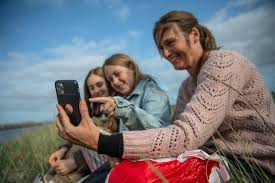

Havmiljøvogter-app
Med Havmiljøvogter-appen kan du nemt registrere, hvor meget affald du har samlet, bestille nye materialer, og melde olieobservationer direkte fra mobilen.
App’en er designet til at gøre det hurtigt og intuitivt at deltage som frivillig.
Download app og tilmeld dig 